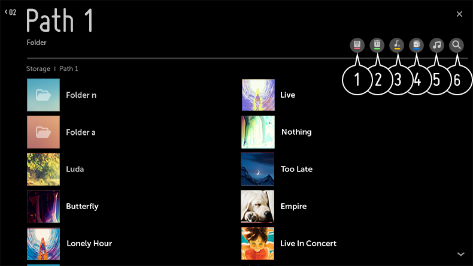

Reproducción de música
Puede escuchar música mediante la aplicación Música.
-
Pulse el botón
 del mando a distancia.
del mando a distancia.
- Ejecute la aplicación Música.
-
Seleccione el dispositivo de almacenamiento que desee.
Puede seleccionar las canciones que desee de sus dispositivos de almacenamiento y agregarlas a Mi lista de reproducción. - Seleccione el contenido musical y disfrútelo.

- Permite seleccionar el tipo deseado de la lista de contenidos.
-
Permite seleccionar y eliminar el contenido deseado.
No se pueden eliminar archivos compartidos desde otros dispositivos
- Permite seleccionar contenido y agregarlo a Mi lista de reproducción.
-
Puede copiar el contenido en un dispositivo de almacenamiento USB.
Esta función solo está disponible en algunos modelos.
- Abre el reproductor de música.
- Inicie Búsqueda.
Uso del reproductor de música
Seleccione un archivo de música almacenado en la aplicación de música o en el inicio y escúchelo cómodamente en el reproductor de música.

- Puede reproducir música del dispositivo de almacenamiento seleccionado.
- Permite establecer la reproducción de repetición y la reproducción aleatoria.
-
Los elementos configurables varían según el modelo.
: Puede apagar la pantalla mientras escucha música o mostrar el reproductor de música en modo de pantalla completa.
: Permite escuchar música con la pantalla apagada. - Permite cambiar la posición del reproductor de música.
- Permite minimizar el reproductor de música.
- Esta función cierra el reproductor de música.
-
Las letras están disponibles para los archivos de música que las ofrecen.
En algunos archivos de música, puede elegir una parte de la letra y cambiar la posición de reproducción.La función de letra solo es compatible con algunos dispositivos.Es posible que la letra no se muestre sincronizada, dependiendo de los datos de letra del archivo de música.
Vuelva a abrir su reproductor de música pulsando la tecla VOLUMEN en su control remoto.
Es posible que no pueda utilizar el reproductor de música para algunas funciones.
Formato de audio
| Formato de archivo | Indicadores de la pantalla | Info |
| mp3 | Velocidad de bits | 32 kbps ~ 320 kbps |
| Frecuencia de muestreo | 16 kHz ~ 48 kHz | |
| Soporte | MPEG-1 y MPEG-2 | |
| Canales | mono, estéreo | |
| wav | Velocidad de bits | - |
| Frecuencia de muestreo | 8 kHz ~ 96 kHz | |
| Soporte | PCM | |
| Canales | mono, estéreo | |
| ogg | Velocidad de bits | 64 kbps ~ 320 kbps |
| Frecuencia de muestreo | 8 kHz ~ 48 kHz | |
| Soporte | Vorbis | |
| Canales | mono, estéreo | |
| wma | Velocidad de bits | 128 kbps ~ 320 kbps |
| Frecuencia de muestreo | 8 kHz ~ 48 kHz | |
| Soporte | WMA | |
| Canales | hasta 6 canales | |
| flac | Velocidad de bits | - |
| Frecuencia de muestreo | 8 kHz ~ 96 kHz | |
| Soporte | FLAC | |
| Canales | mono, estéreo |
El número de programas compatibles puede variar en función de la frecuencia de muestreo.